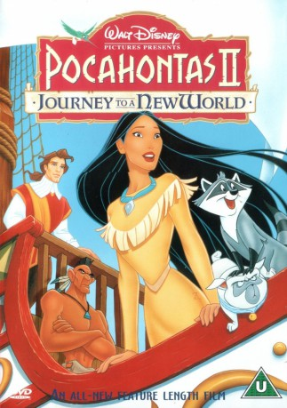

#4454 Pocahontas 2 - Die Reise in eine neue Welt
Alternativ: Pocahontas 2: Journey to a New World (Englischer Titel)
 
 IMDB-Wertung: 4.9 / 10
IMDB-Wertung: 4.9 / 10  Metascore: 0
Metascore: 0 
When news of John Smith's death reaches America, Pocahontas is devastated. She sets off to London with John Rolfe, to meet with the King of England on a diplomatic mission: to create peace and respect between the two great lands. However, Governor Ratcliffe is still around; he wants to return to Jamestown and take over, no matter what the cost. He will stop at nothing to discredit the young princess.
Jahr: 1998
Dauer: 73 Minuten
FSK: 0
Land: USA Studio: ABCTonspuren: DTS - ,
Untertitel: Deutsch,
Auflösung: 1080p (1920x1080) Größe: 3553 MB
Genre: Drama, Abenteuer, Animation/Trick, Familie, Liebe
Regisseur: Tom Ellery, Bradley Raymond
Drehbuch: John Fasano
Soundtrack:
Darsteller:
Datei: X:\Kinder Disney HD\Pocahontas\Pocahontas 2 - Die Reise in eine neue Welt (1998, FSK0, 1920x1080).mkv seit 20.09.2016
Festplatte: Kinder-Filme+Trick
 Alle Filme aus Gruppe 'Kinder Disney HD\Pocahontas'
Alle Filme aus Gruppe 'Kinder Disney HD\Pocahontas'
- Pocahontas
- Pocahontas 2 - Die Reise in eine neue Welt (der aktuelle Film)